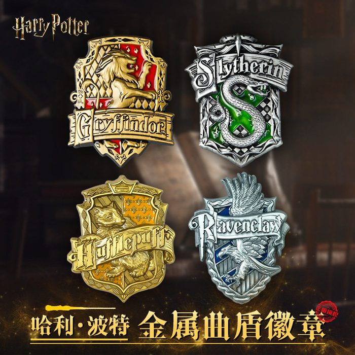

官方世界观预告
黑魔王战败三十余年，魔法界以为黑暗已灭。但无人知晓——封印完好，裂隙却在被无声侵蚀。
1890 封印稳定 · 守护者落幕
新任守护者平定古代魔法失控危机，稳固贮藏库远古封印。封印结构完好，不存在原生裂缝——它唯一的弱点，只能被外部持续的魔力扰动缓慢侵蚀，不会自行崩坏。
1920 默然创伤 · 暗影底色
格林德沃的运动席卷欧洲，大量压抑魔力的年轻巫师诞生默然寄生体。默默然是创伤凝结的黑暗产物，无法净化、无法根除，只能依靠纯度极高的古代魔法短暂压制。这场动荡的暗影底色，长久浸染整片土地。
1998 残片共振 · 侵蚀封印
伏地魔覆灭，破碎的灵魂残片散落英伦，被百年默然暗影吸附同化，化作无数黑暗共振节点，持续释放低频魔力扰动，从外部侵蚀 1890 年封印，打乱世界魔力稳态。
你是 唯一本源抗性者
百年之内唯一拥有古代魔法本源抗性的巫师。但你的力量有边界：只能压制暗影暴走，不能治愈创伤，无法消灭默然，无法逆转世代流传的偏见。故事的核心主题——只能压制，无法根除。
暗线叙事规则（游戏内全程遵守）
本作不存在单独的暗线专属任务：所有伏笔对话、环境文本，全部嵌入普通主线任务流程，与普通对话共用同一套表现形式——没有高亮、没有闪光特效、没有专属提示音效、没有弹窗提醒、不写入任务面板。
真假线索混杂：三年级天文课埋有一条噪音伏笔，全程不会回收，只为让玩家无法单纯靠氛围分辨哪些闲笔是伏笔、哪些只是普通台词。
顿悟依靠玩家记忆与意象共鸣，不强制触发。错过伏笔,永久丢失,无法回看。
主线任务 · 完整七学年
以下伏笔植入点位在游戏内全程无 UI 标记、无任务提示，错过即永久丢失。

异象初现 · 浅埋无痕余烬
- 1-01 城堡导览：跟随级长参观城堡，大厅 → 大理石楼梯 → 校长办公室外侧长廊 → 变形课 → 魔咒课教室。奖励：魔杖抛光套件，解锁快速旅行点位
- 1-02 魔咒课第一课：学习悬浮咒，成功施法 3 次。留在教室，教授会发现你魔杖尖的金色微光。奖励：悬浮咒基础熟练度
虚空泄露 · 创伤暗影伏笔
- 2-01 默然踪迹调查：跟随魔法部外勤人员，探查村庄附近的魔法异象，寻找默然踪迹。奖励：暗影魔力侦测饰品
- 2-02 禁林夜间探查：夜间沿预设路径追踪暗影残迹，抵达禁林边缘确认走向。奖励：夜行防护药剂配方
古秘现世 · 本源裂痕 + 噪音假伏笔
- 3-01 贮藏库历史问询：前往霍格莫德妖精工坊，询问 1890 年贮藏库封印历史。奖励：古代魔力简易解读笔记
- 3-02 禁书区古籍检索：查找远古魔力扰动的古籍记载，注意书页夹缝的泛黄残句。奖励：禁书区临时访问权限
- 3-03 天文课·星象观测：天文塔夜间观测星象。噪音假伏笔——这句话之后全程不会回收奖励：望远镜小配件
全球动荡 · 圣徒半截留白
- 4-01 林间伏击：前往林间裂隙点位压制暴走暗影，途中遭遇残存圣徒拦截。奖励：主线进度推进
- 4-02 魔法部档案查阅：调取默然爆发案例记录，注意档案末尾的小字批注。奖励：默然暗影侦测药剂
封印崩坏 · 旧像复现闲笔
- 5-01 校园紧急疏散演练：巡查走廊安全隐患，组织学生疏散演练。奖励：主线进度推进
- 5-02 黑魔法防御课闲谈：完成课程练习，触发课后闲聊。奖励：高级暗影防护咒练习权限
三方博弈 · 理念闭环 + 画像分支
- 6-01 三方理念辩论：魔法部隔离管控、圣徒理念、中立立场三选一，一旦确定不可反悔。分支：支持魔法部 / 支持圣徒 / 中立（解锁画像深层对话）
- 6-02 校长长廊画像访问：返回长廊与画像交互，只有中立立场才能解锁深层对话链。奖励：无道具,解锁深层对话
终局阶段 · 记忆钩子与顿悟
- 7-01 全校学生疏散：组织学生撤离城堡，检查走廊安全。奖励：完成疏散解锁终战
- 7-02 终局之战：进入裂隙核心，多阶段压制三重黑暗聚合体。奖励：主线通关成就
- 7-03 战后回访画像：主动回到长廊与画像交互（不会自动开启）。奖励：顿悟称号与留白短片
支线预埋闲笔
三条支线均埋有残缺文本伏笔——文字被遮挡、无高亮，需要玩家仔细辨认。

四学院，三种身份，一条暗线。支线散落在不同的学院与营地——你不属于任何一边，却要把所有痕迹串起来。
S01 · 拉文克劳谜语之门
三年级解锁，进入拉文克劳公共休息室秘密阁楼，解开古老石门谜语。
S02 · 斯莱特林暗影契约
四年级解锁，调查斯莱特林地牢密室残留的暗影契约残片。
S03 · 马人星象预言
五年级解锁，禁林马人营地，交流魔力扰动与星象关联。
支线通用规则
所有伏笔文字与普通任务文本共用同一套表现：没有高亮标记、没有特殊字号提示、不写入任务面板。
真假线索混杂——散落书籍、信件、便条类闲笔伏笔会持续增加，混入大量无关噪音台词；玩家只能依靠记忆与意象共鸣去辨认，游戏不会告诉你哪些是伏笔。
魔法地图
点击金色标记，查看对应区域相关的任务


终局 · 静默顿悟
没有弹窗、没有提示、没有任务日志——只有记得的人，才能走到最后一步。

两个达成条件
① 打完终局战斗，完整听完三重黑暗聚合体的全部台词；
② 决战前的全校疏散任务，走过校长办公室外侧长廊，亲眼看到画像状态发生变化。
画像的收尾对话
你去了裂隙。你回来了。
……我们当年没能看懂的，你看懂了。
静默解锁 · 留白收束
称号「星火观星者」静默加入称号列表（无弹窗通知）；自动播放 35 秒无旁白留白短片——禁林晚风、古籍残页、长廊画像的侧影。
错过的代价
你必须主动回到长廊，手动与画像交互才会触发收尾。如果疏散任务绕开了长廊、或终局战斗跳过了聚合体台词——回访画像只能看到简短慰问，带"我们"的收尾对话、称号与短片全部永久锁死。
顿悟不靠系统提示，靠的是你自己的记忆与意象共鸣。

金色飞贼记住了第一个触碰它的人。
这个世界的秘密，也只向记得的人打开。
开发进度
立项于 2026 年 6 月 25 日，至今约 4 个月。进度仅供参考，实际速度取决于作者睡眠质量。
进度 3% —— 刚把饼画出来，面团都还没和。